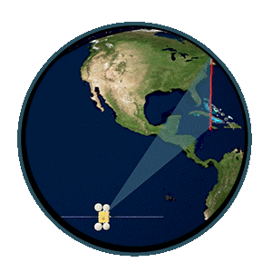

Week 1 - Introduction to Remote Sensing
Summary
In my first remote sensing class, I stepped into a world where satellites and sensors act like high-tech scouts, constantly transmitting data about our planet. Seeing how these eyes in the sky capture the world as it is helps us understand everything from urban sprawl to retreating glaciers.
Here’s what I learnt this week:
Remote sensing
Gather information about the Earth’s surface through sensors mounted on satellites or aircraft.
Types of sensors
Active sensors
Emit electro-entropic magnetic (EM) waves and receive reflected signals, can pass through clouds and work in the dark, such as X-rays, radar (e.g., synthetic aperture radar (SAR), laser radar (LIDAR)), which are commonly used for topographic mapping and forest altitude measurements.
Passive sensors
Rely on the energy radiated by the sun or the earth itself and do not emit any signals, but only receive the energy reflected back from the light emitted by the sun, (e.g., the human eye, cameras, and multispectral sensors such as those from the LANDSAT series of satellites), which are commonly used in water resource management, climate change monitoring and disaster response.

Electromagnetic waves
Electromagnetic waves are the core of remote sensing technology, which obtains information about the characteristics of the Earth’s surface by capturing and analysing electromagnetic waves reflected or radiated back from the Earth’s surface. Specifically, different substances and surfaces absorb and reflect various bands of electromagnetic waves in different ways, and remote sensing equipment takes advantage of this property to identify and classify surface materials and phenomena by receiving electromagnetic waves in specific bands. The figure below shows the different types of electromagnetic waves, which are arranged from longest to shortest wavelength. The longer the wavelength, the lower the frequency; and vice versa.

In addition, different wavelengths lead to different colour spectra, which is why we can see coloured images. For example, the blue colour of the sky is mainly due to the phenomenon of Rayleigh scattering in the atmosphere, which makes shorter wavelengths of blue light scatter more easily than longer wavelengths of light (e.g., red, orange, yellow).
Resolution
Resolution plays an important role in the use of sensor data and will vary depending on the orbit of the satellite and the design of the sensor. For any data set, there are four types of resolution that need to be considered:
- Radiometric Resolution: the amount of information in each pixel; the higher the radiometric resolution, the more values of information are stored
- Spatial Resolution: the size of the smallest recognisable object in the image
- Spectral Resolution: the ability of the sensor to recognise finer wavelengths - the narrower the range of wavelengths are, the finer the spectral resolution
- Temporal Resolution: the time it takes for the satellite to time it takes to complete an orbit and revisit the same observation area
Why not build a sensor that combines high spatial, spectral and temporal resolution? Because it is difficult to combine all of the required functions into a single remote sensor, researchers must make trade-offs, understand the types of data that are more important for the specific field. For example, high temporal resolution is critical when studying weather over time, while higher spectral or spatial resolution is more important when studying seasonal vegetation changes.
Application
After understanding the basic concepts of remote sensing and related terminology, I began to delve into its application areas, which help us solve many real-world problems.
For example, using remote sensing, we can keep a close eye on active volcanoes, looking for any changes in their thermal profiles that might indicate an imminent eruption. This is critical in areas where volcanoes pose a risk to populations and infrastructure and where traditional observation methods are too dangerous.
Another impressive application is disaster management. After an earthquake, it is crucial to assess the damage quickly. The use of remote sensing, particularly object-based image classification and change detection, can speed up this process by providing an accurate damage assessment from above. This helps rescuers know where they are most needed, saving precious time and lives.
In agriculture, NDVI (Normalised Vegetation Index) is a very useful tool derived from remote sensing. It measures the health of vegetation by comparing the reflectance of near-infrared light (reflected by plants) to red light (absorbed by plants). In this way, farmers can track crop health, manage resources more efficiently, and even predict yields. This only scratches the surface. Remote sensing helps monitor the environment and biodiversity, plan urban and rural infrastructure, manage natural resources, and much more. It is truly an indispensable tool in our toolkit for effective management of the planet and its resources.
I have to mention that my teacher mentioned a very interesting case study about illegal deforestation in Brazil, which has piqued my great interest in GEE, which I am really looking forward to.